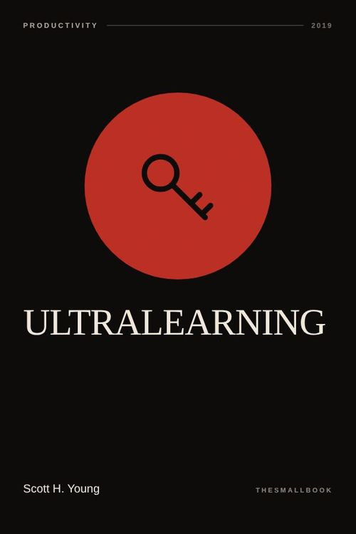

Library › Ask the Library › How do I learn anything faster?
How do I learn anything faster?
The short answer
Learn by doing, not by consuming: after every input, close the material and recall it. Test yourself instead of rereading. Work at the edge of your ability, comfortable practice is maintenance, not growth. Feedback is the fuel; without it, practice just repeats.
The books behind the answer

Ultralearning
Scott H. Young · 2019 · 11 min · 8 lessons
Aggressive, self-directed learning - metalearning, deep practice, and direct application - can outpace formal education.
- Metalearning First: Map the skill before you start, 10% planning saves 50% time.

Peak
Anders Ericsson & Robert Pool · 2016 · 9 min · 7 lessons
Anders Ericsson, the researcher behind the 10,000-hour rule, explains what actually creates expertise: deliberate practice, mental representations and coaches.
- Deliberate Practice: Practice at the edge of failure with feedback, that's where skill is built.

A Mind for Numbers
Barbara Oakley · 2014 · 8 min · 6 lessons
Math and science aren't about talent - they're about two modes of thinking, chunks, and the courage to be a beginner.
- Focused vs Diffuse Mode: Alternate intense focus with rest, the diffuse mode does the pattern-matching.
Questions people ask next
Can I read this in Hindi?
Yes. This answer is written in simple English. Open any linked book and choose Hindi or Hinglish to read the full lessons in your language, with audio where available.